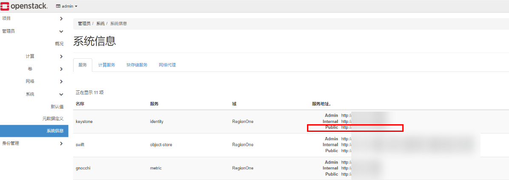

后续注册OpenStack时，需要使用OpenStack的KeyStone V3地址，可参考本节操作获取对应地址。
对于FusionSphere OpenStack，参考以下步骤获取KeyStone V3地址：
su - root
source set_env
openstack endpoint list | grep keystonev3
host02:~ # openstack endpoint list | grep keystonev3 | 6894ac66481e46e493c09b76110ec474 | az236.dc236 | keystonev3 | identityv3 | True | admin | https://identity.az236.dc236.huawei.com:443/identity-admin/v3 | | 70b95d31ae75419980442cfae7362d97 | az236.dc236 | keystonev3 | identityv3 | True | internal | https://identity.localdomain.com:8023/identity-admin/v3 | | 25cb9711e63f420b944d048bddba0d3d | az236.dc236 | keystonev3 | identityv3 | True | public | https://identity.az236.dc236.huawei.com:443/identity/v3
对于OpenStack社区版，参考以下步骤获取KeyStone V3地址：
